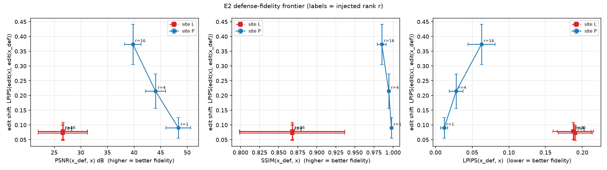
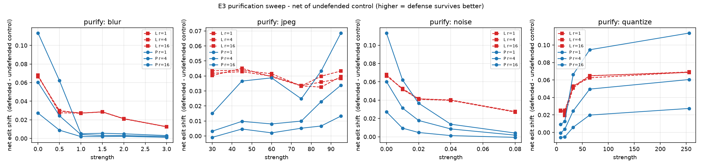

本頁由 scripts/make_report.py 自 runs/ 直接生成，數字未經人工轉錄。
來源：runs/e0/e0_cost.csv、runs/e0b/e0_breakdown.csv、runs/e0_vae/e0_cost.csv。V100 32GB、SD v1-4、512²、fp32。
初次量測（僅 UNet checkpoint）：18 格中 8 格 OOM。可行格的 peak 於 (5,5) 到 (20,20) 之間僅由 18665.4 MB 變動到 18667.3 MB —— 步數變動四倍而記憶體幾乎不動，代表瓶頸與步數無關。
| 項目 | peak (MB) | 秒 |
|---|---|---|
| weights | 4093.000 | 0.000 |
| vae_encode | 7153.900 | 0.296 |
| vae_decode | 9934.500 | 0.301 |
| vae_decode_ckpt | 9934.400 | 0.427 |
| unet_step_ckpt | 5655.000 | 0.449 |
| full_u1_v1 | 9950.700 | 7.873 |
| full_u1_v0 | 18665.400 | 7.536 |
| full_u0_v1 | -1.000 | -1.000 |
| full_u0_v0 | -1.000 | -1.000 |
整條計算圖上有三次 VAE 呼叫（x_def 的 decode、SDEdit 的 encode 與 decode）。未 checkpoint 時三者的激活必須同時留存至反向傳播，peak 為總和；checkpoint 後反向一次只重算一塊，peak 降為最大值。單次 decode 不受影響（9934.5 → 9934.4 MB），與此解釋一致。
| k_inv | n_edit | peak (MB) | 秒/iter |
|---|---|---|---|
| 5 | 5 | 9949.700 | 4.491 |
| 5 | 10 | 9950.000 | 5.963 |
| 5 | 20 | 9950.700 | 8.997 |
| 5 | 30 | 9951.300 | 12.136 |
| 5 | 50 | 9952.600 | 18.190 |
| 10 | 5 | 9950.400 | 6.356 |
| 10 | 10 | 9950.700 | 7.876 |
| 10 | 20 | 9951.300 | 10.901 |
| 10 | 30 | 9952.000 | 14.042 |
| 10 | 50 | 9953.300 | 20.119 |
| 20 | 5 | 9951.600 | 10.168 |
| 20 | 10 | 9952.000 | 11.685 |
| 20 | 20 | 9952.600 | 14.825 |
| 20 | 30 | 9953.200 | 17.971 |
| 20 | 50 | 9954.500 | 23.990 |
| 30 | 5 | 9952.900 | 14.144 |
| 30 | 10 | 9953.200 | 15.501 |
| 30 | 20 | 9953.900 | 18.805 |
| 30 | 30 | 9954.500 | 21.697 |
| 30 | 50 | 9955.800 | 27.944 |
| 50 | 5 | 9955.800 | 21.761 |
| 50 | 10 | 9956.100 | 23.431 |
| 50 | 20 | 9956.800 | 26.321 |
| 50 | 30 | 9957.400 | 29.466 |
| 50 | 50 | 9958.700 | 35.738 |
擬合：seconds ≈ 1.05 + 0.384·k_inv + 0.304·n_edit，於 (50,50) 的誤差小於 1%。peak 在整張表上介於 9949.7 與 9958.7 MB，即記憶體已不是限制，時間才是。
來源：runs/e0c_tmax/recon_floor.csv，n = 6 張。
site P 在 φ=0 時 x_def = x 逐元素相等；site L 在 φ=0 時x_def 仍是「VAE 編碼 → DDIM inversion → 去噪 → VAE 解碼」的重建，其誤差 φ 無法消除。t_max = 0, k_inv = 0 一列是VAE 單獨來回，即不可約的地板。
| t_max | k_inv | PSNR | LPIPS | SSIM | L∞ |
|---|---|---|---|---|---|
| 0 | 0 | 27.512 | 0.143 | 0.896 | 0.707 |
| 200 | 5 | 26.592 | 0.201 | 0.867 | 0.714 |
| 200 | 10 | 27.245 | 0.167 | 0.888 | 0.720 |
| 200 | 20 | 27.486 | 0.151 | 0.895 | 0.717 |
| 300 | 5 | 25.535 | 0.251 | 0.827 | 0.707 |
| 300 | 10 | 26.780 | 0.190 | 0.873 | 0.714 |
| 300 | 20 | 27.342 | 0.161 | 0.890 | 0.718 |
| 400 | 5 | 24.213 | 0.315 | 0.767 | 0.701 |
| 400 | 10 | 26.071 | 0.221 | 0.847 | 0.709 |
| 400 | 20 | 27.050 | 0.175 | 0.880 | 0.713 |
| 500 | 5 | 22.535 | 0.411 | 0.681 | 0.711 |
| 500 | 10 | 24.946 | 0.267 | 0.806 | 0.710 |
| 500 | 20 | 26.563 | 0.194 | 0.867 | 0.702 |
| 700 | 5 | 18.555 | 0.624 | 0.472 | 0.810 |
| 700 | 10 | 20.519 | 0.507 | 0.581 | 0.790 |
| 700 | 20 | 24.008 | 0.272 | 0.791 | 0.716 |
| 999 | 5 | 15.041 | 0.738 | 0.355 | 0.832 |
| 999 | 10 | 16.873 | 0.697 | 0.406 | 0.786 |
| 999 | 20 | 19.767 | 0.529 | 0.564 | 0.769 |
原設定 t_max = 999、k_inv = 10 的重建為 PSNR 16.87 / LPIPS 0.697，即 φ=0 時 x_def 與 x 已是兩張不同的圖，spec §1.1 的「人眼尺度上接近」在起點就不成立。改用 t_max = 500、k_inv = 20 後為 26.56 / 0.194，與 VAE 地板（27.51 / 0.143）相距約 1 dB。
來源：runs/e2/summary.csv（36 格）、results.csv（828 列）。
| site | 注入 r | n | 編輯偏移 | PSNR | SSIM | L∞(φ 造成) | eff_rank | energy_rank99 |
|---|---|---|---|---|---|---|---|---|
| L | 1 | 6 | 0.073 | 57.778 | 0.868 | 0.049 | 512.000 | 321.611 |
| L | 4 | 6 | 0.078 | 54.232 | 0.868 | 0.062 | 512.000 | 321.778 |
| L | 16 | 6 | 0.079 | 52.538 | 0.868 | 0.085 | 512.000 | 321.667 |
| P | 1 | 6 | 0.090 | 48.334 | 0.998 | 0.027 | 147.167 | 1.056 |
| P | 4 | 6 | 0.214 | 44.043 | 0.994 | 0.051 | 173.556 | 4.111 |
| P | 16 | 6 | 0.373 | 39.785 | 0.985 | 0.069 | 215.833 | 16.167 |

x_def = x 逐元素相等；site L 在 φ=0 時已帶有 inversion + VAE 來回的重建誤差（E0c 實測 19.61–31.01 dB，逐張差異達 11.4 dB）。前緣圖的橫軸是相對原圖的絕對保真度，故此差異在圖上直接可見，未以損失函數的設計掩蓋。
縱軸為淨額偏移 net = edit − ctrl，其中 ctrl 是同一淨化算子施加於原圖後編輯所產生的偏移（φ 完全沒有參與）。必須扣除：P(x) ≠ x，故即使 φ=0，模糊或 JPEG 本身就會讓編輯偏離 E(x)。實測 site P、r=1 在 blur 下 shift 0.347、identity 下 0.098——高的那個是淨化自己造成的。不扣除則 E3 的每個數字都被系統性高估，且高估幅度隨淨化強度上升，而那正是 §7.4 因果判斷所讀的軸。
spec §7.4 的因果判斷讀這張圖：P 為低秩加性、L 為低秩非加性。P 亦耐淨化則機制是秩結構；P 不耐而 L 耐則機制是非加性；兩者皆耐則兩機制不可分辨。三種結果都是可發表的發現。
| site / r | 0 | 0.5 | 1 | 1.5 | 2 | 3 |
|---|---|---|---|---|---|---|
| L r=1 | 0.068 | 0.028 | 0.027 | 0.029 | 0.021 | 0.013 |
| L r=4 | 0.067 | 0.029 | 0.027 | 0.028 | 0.021 | 0.013 |
| L r=16 | 0.066 | 0.030 | 0.027 | 0.028 | 0.021 | 0.012 |
| P r=1 | 0.027 | 0.009 | 0.002 | 0.002 | 0.002 | 0.001 |
| P r=4 | 0.060 | 0.024 | 0.004 | 0.003 | 0.003 | 0.002 |
| P r=16 | 0.113 | 0.062 | 0.005 | 0.006 | 0.005 | 0.003 |
| site / r | 30 | 45 | 60 | 75 | 85 | 95 |
|---|---|---|---|---|---|---|
| L r=1 | 0.044 | 0.044 | 0.041 | 0.033 | 0.040 | 0.043 |
| L r=4 | 0.042 | 0.043 | 0.040 | 0.034 | 0.036 | 0.038 |
| L r=16 | 0.040 | 0.045 | 0.039 | 0.033 | 0.033 | 0.040 |
| P r=1 | -0.001 | 0.005 | 0.002 | 0.005 | 0.007 | 0.013 |
| P r=4 | 0.003 | 0.010 | 0.008 | 0.010 | 0.023 | 0.034 |
| P r=16 | 0.015 | 0.037 | 0.039 | 0.025 | 0.043 | 0.069 |
| site / r | 0 | 0.01 | 0.02 | 0.04 | 0.08 |
|---|---|---|---|---|---|
| L r=1 | 0.068 | 0.052 | 0.041 | 0.040 | 0.027 |
| L r=4 | 0.067 | 0.052 | 0.041 | 0.040 | 0.027 |
| L r=16 | 0.066 | 0.053 | 0.041 | 0.040 | 0.028 |
| P r=1 | 0.027 | 0.009 | 0.005 | 0.001 | -0.001 |
| P r=4 | 0.060 | 0.031 | 0.018 | 0.009 | 0.002 |
| P r=16 | 0.113 | 0.062 | 0.037 | 0.014 | 0.004 |
| site / r | 8 | 16 | 32 | 64 | 256 |
|---|---|---|---|---|---|
| L r=1 | 0.025 | 0.023 | 0.053 | 0.062 | 0.069 |
| L r=4 | 0.024 | 0.025 | 0.053 | 0.065 | 0.069 |
| L r=16 | 0.025 | 0.019 | 0.051 | 0.065 | 0.069 |
| P r=1 | -0.006 | -0.005 | 0.006 | 0.020 | 0.027 |
| P r=4 | -0.001 | 0.004 | 0.024 | 0.050 | 0.061 |
| P r=16 | 0.009 | 0.013 | 0.066 | 0.095 | 0.114 |
來源：runs/e2/overfit_table.md。
φ 是針對訓練用的那一組 ε 優化出來的（n_eot = 1）。評測一律改用未見過的種子；此表併列訓練種子的結果，兩者之差即為過擬合幅度。比值遠大於 1 表示防禦主要是對該組噪聲有效，泛化到其他噪聲的能力有限。
| site | r | 訓練種子偏移 | 未見種子偏移 | 差 | 比值 |
|---|---|---|---|---|---|
| L | 1 | 0.0729 | 0.0679 | +0.0050 | 1.07x |
| L | 4 | 0.0775 | 0.0671 | +0.0104 | 1.16x |
| L | 16 | 0.0791 | 0.0664 | +0.0127 | 1.19x |
| P | 1 | 0.0900 | 0.0272 | +0.0628 | 3.31x |
| P | 4 | 0.2145 | 0.0602 | +0.1543 | 3.56x |
| P | 16 | 0.3735 | 0.1133 | +0.2601 | 3.30x |
site P 的 eff_rank 遠高於注入秩而 energy99 等於注入秩，即 spec §7.2 修訂紀錄所述的 clamp 效應：低秩結構在能量意義下成立、在精確秩意義下不成立。site L 的像素秩為湧現量，沒有理論保證，此處為實測值。
| site | 注入 r | eff_rank(x_def−x) | energy99(x_def−x) | eff_rank(Δ) | energy99(Δ) | clamp 比例 |
|---|---|---|---|---|---|---|
| L | 1 | 512.0 | 321.6 | — | — | — |
| L | 4 | 512.0 | 321.8 | — | — | — |
| L | 16 | 512.0 | 321.7 | — | — | — |
| P | 1 | 147.2 | 1.1 | 1.0 | 1.0 | 0.35% |
| P | 4 | 173.6 | 4.1 | 4.0 | 4.0 | 0.44% |
| P | 16 | 215.8 | 16.2 | 16.0 | 15.8 | 0.59% |